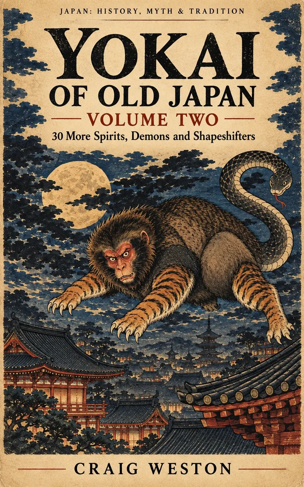
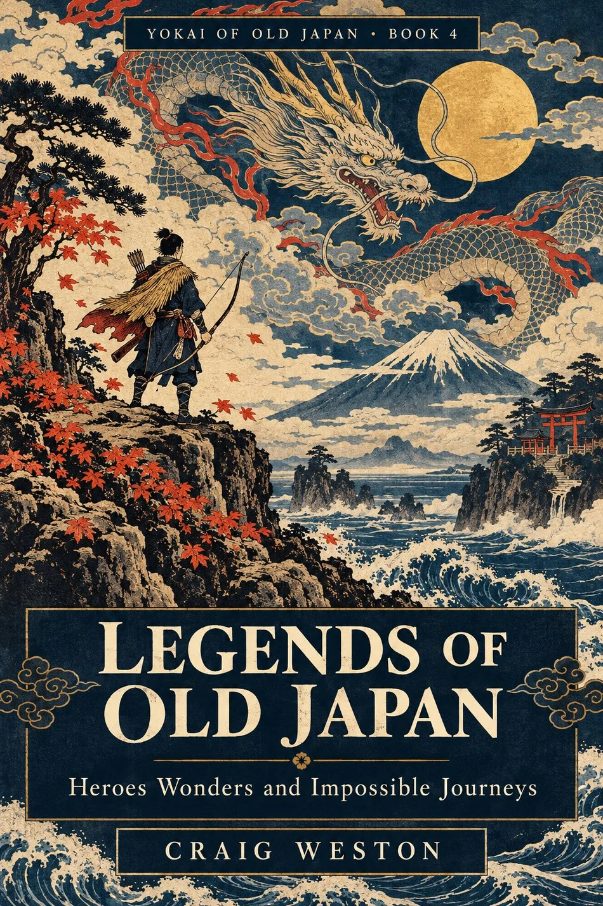
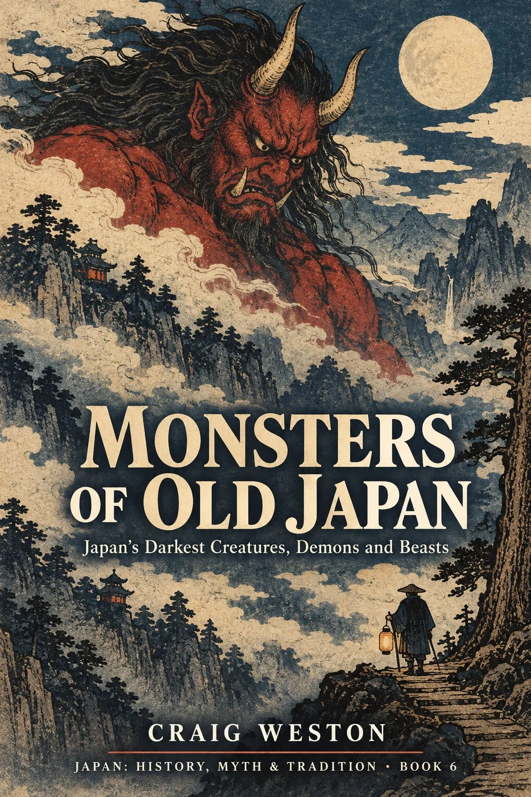
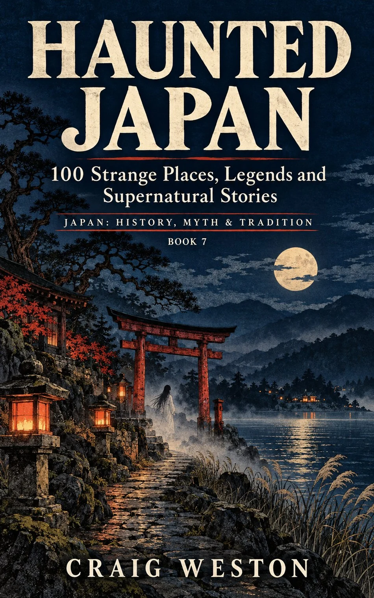
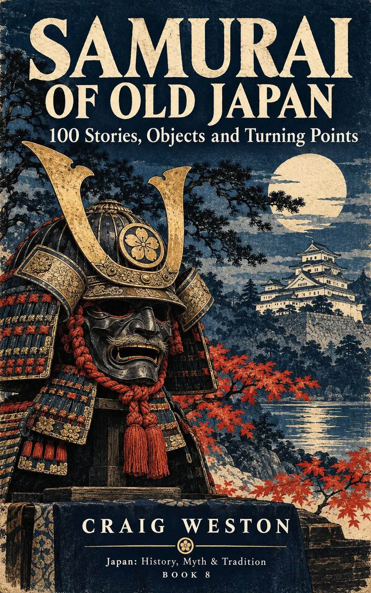
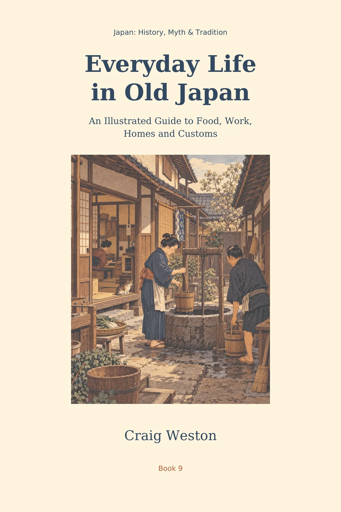

01 / 09

I’m Craig Weston. I design digital products for people with better things to do than fight a confusing interface. I also write about UX and Japanese folklore, because apparently one rabbit hole wasn’t enough.
“Curiosity is a perfectly reasonable hobby. Mine just keeps turning into books.”
DESIGN IS A PRACTICE. CURIOSITY IS A WAY OF LIFE.Here to solve a tricky product problem, inspect a case study, or meet a Japanese ghost? All perfectly sensible reasons. Pick a direction.

I started in software engineering before finding my way into product design and management. That means I care about the code, the business decision and, above all, the poor soul trying to use the finished thing. Good design ought to make life easier, not require a small instruction manual and a stiff drink.
A few days around the lakes and waterfalls of the Lake District will remind you that the world works rather well without a notification badge. It’s also why cleaner technology and reducing emissions matter to me: the things we build should leave something better behind.
AI can now make a convincing interface before the kettle boils. Unfortunately, it can also make the wrong interface just as quickly. My book is about the people, questions and design fundamentals that stop that happening.
“Making is cheap. Being wrong is still expensive.”

The interesting design work happens before anyone chooses a shade of blue. What are people trying to do? Why is it difficult? Who decided this needed six steps? Start with the awkward questions, then make the answer feel effortless.
Explore user-centred design ↗Observe, listen, reframe. Don't mistake an assumption for an insight.
Connect discovery with architecture, content and interaction.
Respect accessibility, performance, hierarchy and motion.
Japanese art and everyday thinking taught me to look for what can be left out. A little space, a meaningful pause, a detail placed just where it belongs. In design that can mean one less button. Away from my desk it can mean a quiet walk, a lake, and a phone that stays in my pocket.
THE INFLUENCE BEHIND THE WORK ↗Meet the ghosts, monsters, samurai and rather peculiar neighbours of old Japan. Nine illustrated volumes, because the folklore is endless and my bookshelf has apparently signed a waiver.

30 More Spirits, Demons and Shapeshifters
Find on Amazon





An illustrated journey through history, myth and tradition.
Author cataloguePrefer the whole collection? Explore the illustrated anthology, or browse Craig Weston’s entire author catalogue on Amazon.
A good interface should not require the user to develop a second career in detective work.
A NOTE FROM THE DESIGN DESK